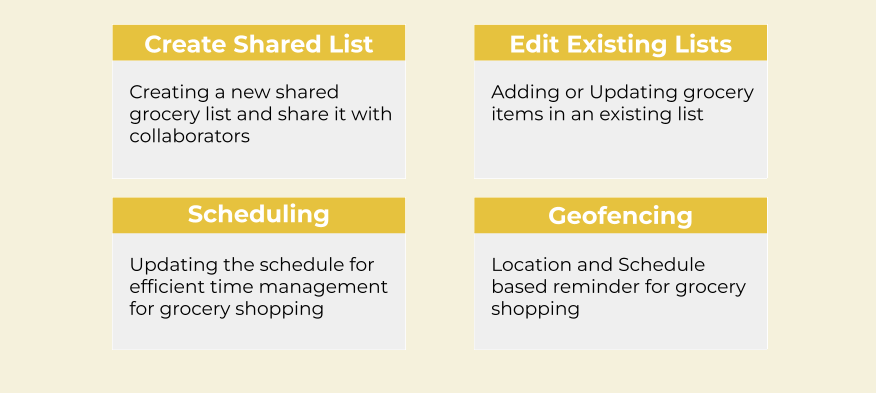
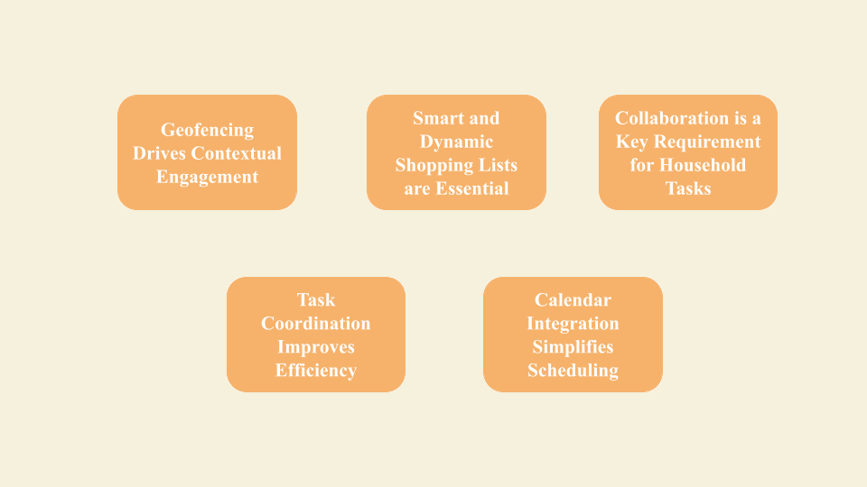
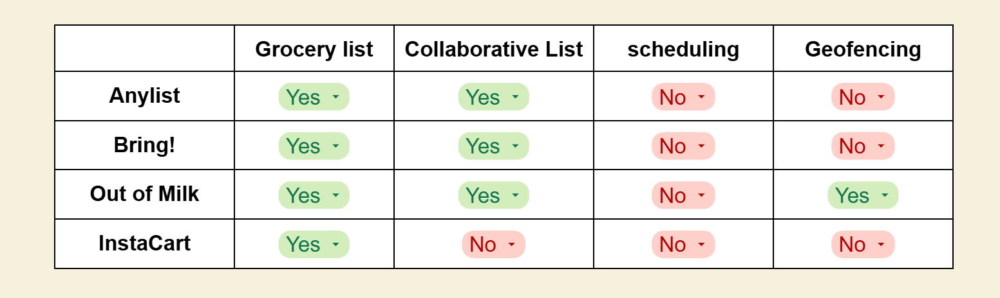
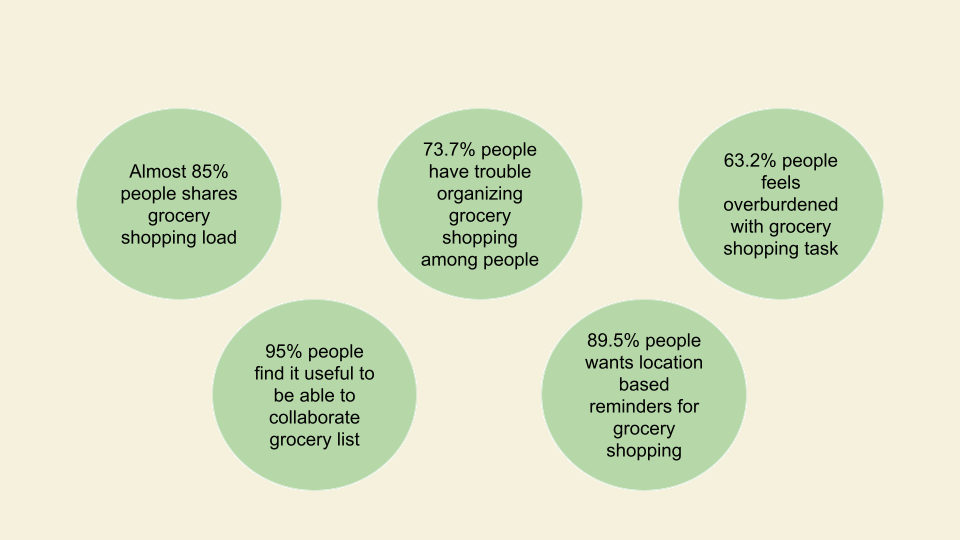

Introduction
Background
GrocerMate was developed to address the challenges faced by busy households in managing grocery shopping efficiently. In today’s fast-paced lifestyle, people often struggle with forgotten items, lack of coordination among family members, and time wasted on unorganized trips. GrocerMate provides a digital solution to streamline these processes and make grocery shopping hassle-free and collaborative.
Problem
Households often face several challenges when managing groceries, which can lead to inefficiencies and unnecessary stress. A common issue is the lack of shared shopping lists, resulting in duplicate purchases or missed items. Poor coordination among household members during shopping trips further complicates matters, making it difficult to ensure everyone’s needs are met. Additionally, people often forget to shop when they are near a store, missing convenient opportunities to purchase essentials. Time inefficiency also arises from scattered grocery planning and tracking, which can disrupt schedules and create unnecessary frustration. Together, these problems waste valuable time and money while adding to the stress of daily life.
Goals
The goal is to create an app that simplifies grocery shopping for households by addressing common challenges and promoting efficiency. The app will enhance collaboration through shared lists and scheduling features, ensuring that all household members are on the same page. Location-based reminders will help users complete tasks on time, making it easier to shop when near a store. By focusing on a seamless and intuitive user experience, the app will streamline the shopping process. Additionally, it will reduce waste by preventing duplicate purchases and ensuring that no essential items are missed.
Funtions
Research
Goal of Research
The aim is to gain a clear understanding of both the functional and non-functional requirements of the users to ensure that GrocerMate meets their needs effectively. This involves developing a conceptual framework for the app, outlining its core features and capabilities. Additionally, it is essential to explore the context in which users will be motivated to use GrocerMate, identifying the scenarios and challenges that drive their engagement with the app.
Methodology
Our Research involves a comprehensive approach to understanding and addressing the challenges of grocery shopping. It begins with a review of existing literature related to efficient grocery shopping, providing insights into best practices and common pain points. A market analysis of collaborative grocery shopping apps follows, identifying trends and gaps in the current solutions. Finally, user surveys and interviews are conducted to gather firsthand information about user needs and requirements, ensuring that the development of GrocerMate is aligned with real-world demands.
Literature Review
Market Analysis
Requirement Elicitation
We conducted a survey of 19 people and 4 interviews to gather the requirements of the users.
Define
User Scenario
Background
Jeffery is an engineer with a full schedule. He often struggles to find time for grocery shopping. He shares a household with his partner, Jenny, who is also doing a 9 to 5 job, and they split the grocery responsibilities between them.
Scenario
Today Jeffery has two meetings: one before the lunch break and one after 4 PM. He finishes his first meeting and is about to go for lunch when he receives a geofence triggered notification from the app. This notification reminds him of the items in his grocery list that need to be purchased and can be purchased from the grocery store near his office. As the grocery management app has given him the notification syncing with his calendar, his next meeting is 3 hours later, he has enough time to pick the items on the list before the next meeting starts. Jeffery buys all the items in the suggested list by the app and tick marks all of them so that the app notifies Jenny about the items that have been already bought. Jeffery is able to finish shopping quickly and does not miss any of the essential groceries that could be found on his way home today.
Conceptual Framework
Prototype
Demo Video
A demo video of our High Fidelity Prototype